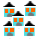

Entrez une adresse :

La Liste des marqueurs est vide.
La Liste des pays est vide.
Cliquer sur le bouton de commande « charger la liste des pays » pour l´utiliser.
Outils
Masquer les outils
Zooms
Activer le zoom selectif
Zoom selectif persistant
Zoom selectif temporaire
ms :
Activer les zooms par double click sur la carte
Cache du géocodeur
Vider le cache
Réinitialiser le cache
Introduction
Adresses
Marqueurs
Carte
Chargement de la carte...
Statut :
Le géocodeur a trouvé plusieurs adresses.
Séléctionnez en une ou cliquer sur annuler :
Séléctionnez tout le contenu.
Copiez et collez le dans un fichier à enregistrer
En attendant mieux...